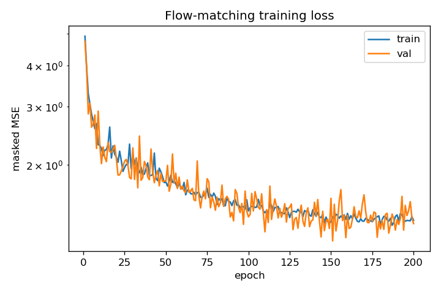
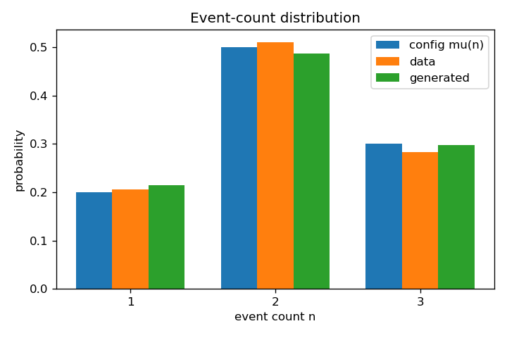
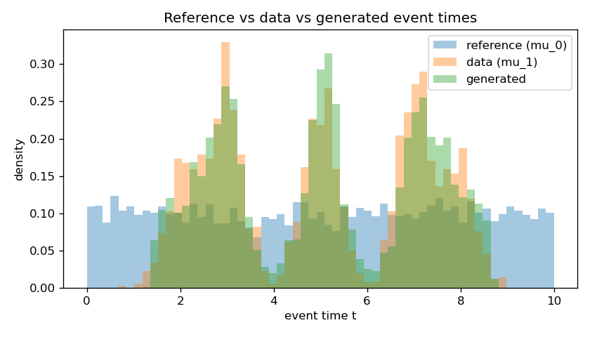
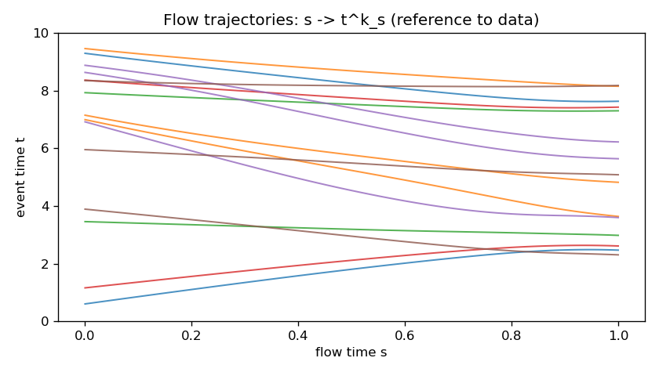

EventFlow: Flow Matching for Temporal Point Processes
A temporal point process (TPP) sample is a finite, sorted list of timestamps in a window $[0,T]$ — when did the trades fire, when did the patient have appointments, when did the server log errors. The usual way to model these is autoregressive: predict the next gap, then the next, then the next, accumulating error as the horizon grows. EventFlow instead learns a single flow that transports a simple reference TPP onto the data TPP in one shot — generating the whole sequence non-autoregressively. The trick that makes flow matching work on variable-length sets is a balanced coupling, and the whole story is checked on a tiny clustered synthetic process whose numbers are reproduced by the companion notebook.
The idea: transport a reference TPP onto the data TPP
Represent one event sequence as a finite ordered list of times, or equivalently as a sum of point masses (a counting measure):
The number of events is itself a random quantity, captured by the count functional $N(\gamma)=n$. A TPP distribution $\mu\in\mathcal P(\Gamma)$ therefore has two parts: a distribution over how many events occur, and — given that count — a density over where they land,
Flow matching learns a velocity field that, integrated as an ODE in a flow time $s\in[0,1]$, carries samples from a simple reference distribution $\mu_0$ to the data distribution $\mu_1$. The complication unique to point processes is that two samples can have different lengths: you cannot linearly interpolate a 2-event sequence into a 3-event one coordinate by coordinate. EventFlow sidesteps this by being careful about how reference and data sequences are paired.
The balanced coupling
A coupling is a joint distribution over source–target pairs $z=(\gamma_0,\gamma_1)\sim\rho$. It is called balanced when the two sides always have the same count:
The naive recipe — sample $\gamma_0\sim\mu_0$ and $\gamma_1\sim\mu_1$ independently — breaks this: nothing forces the counts to agree, and a 2-event source paired with a 3-event target has no coordinate-wise interpolant. The fix is to sample the pair conditionally. Draw the data sequence first, read off its count $n=N(\gamma_1)$, then draw exactly $n$ reference times i.i.d. from a simple density $q$ on $[0,T]$ and sort them:
For the minimal experiment $q=\operatorname{Uniform}(0,T)$. By construction $N(\gamma_0)=N(\gamma_1)$, so the pair is balanced and the two sorted sequences can be matched event-for-event. In code this is a two-liner:
The noisy linear interpolant
Two time variables now live in the model and must not be confused: the event time $t\in[0,T]$ says when an event happens; the flow time $s\in[0,1]$ says how far the sample has travelled from reference toward data. Given a balanced pair, interpolate each matched event linearly in $s$,
Training on this deterministic path alone would only ever show the network points exactly on the straight line between source and target. To spread probability mass into a tube around the path — so the learned field is defined off the line too — add small independent Gaussian noise to each interpolated event:
This conditional law (the small Gaussian cloud around the path of one fixed pair $z$) is written $\eta^z_s$. Averaging it over all balanced pairs gives the global interpolating distribution that training actually targets,
The integral is never computed. Each training example is drawn by sampling a pair $z\sim\rho$, a flow time $s\sim\operatorname{Uniform}(0,1)$, and a noisy point $\hat\gamma^z_s\sim\eta^z_s$; across minibatches these approximate the marginal path $\eta_s$.
The vector field and the training objective
Because the interpolant is linear in $s$, the velocity of a fixed pair is constant in both $s$ and $\gamma$ — it is just the displacement of each event,
The field we actually want to deploy at generation time is the marginal one: at an intermediate sequence $\gamma$, average the conditional velocities of every pair that could have produced $\gamma$ at flow time $s$,
That conditional expectation involves unknown density ratios and cannot be evaluated directly. The flow-matching insight is that regressing a network onto the simple conditional targets $v^z_s=\gamma_1-\gamma_0$ recovers the marginal field in expectation, up to a constant independent of the parameters. So the objective is just a masked least-squares fit:
With padded minibatches the loss is evaluated only on valid event positions, so padding never contributes a gradient:
where $m_{b,k}\in\{0,1\}$ is the mask marking real events versus padding.
The network $v_\theta$ is deliberately light: a small MLP applied pointwise to each event, but with enough global context that it knows which sequence it is in. Each event $k$ is described by five features
where $\bar t$ is the masked mean event time of the sequence, concatenated with a sinusoidal embedding of the flow time $s$. The MLP outputs one scalar velocity per event, with padding positions zeroed. Generation then integrates the learned ODE with explicit Euler from a uniform reference sequence of the desired count,
clipping to $[0,T]$ and sorting at the end. Crucially the ODE moves events but never changes the count, so the count is fixed up front by sampling from the (known, here) count distribution — the flow is responsible only for where the events go.
The minimal experiment
The goal is not to beat a benchmark but to verify the method matches the theory: starting from a uniform reference TPP, does the learned flow pull events onto the data clusters while preserving the count distribution? The synthetic data process lives on $[0,T]$ with $T=10$ and a three-mode count distribution
with the reference sharing it, $\mu_0(n)=\mu_1(n)$. Conditional on the count, each data event is a tight Gaussian around a fixed cluster center (then clipped to $[0,T]$ and sorted),
while the reference draws its $n$ times i.i.d. $\operatorname{Uniform}(0,10)$. The exact configuration of the run reported below:
| Setting | Value | Setting | Value |
|---|---|---|---|
| window $T$ | 10.0 | train / val size | 10000 / 1000 |
| interpolant noise $\sigma$ | 0.05 | batch size | 128 |
| model | pointwise MLP + context | hidden dim × layers | 128 × 3 |
| time-embedding dim | 32 | parameters | 38,017 |
| epochs | 200 | learning rate | $10^{-3}$ (Adam) |
| grad-clip norm | 1.0 | ODE steps (Euler) | 100 |
| generated samples | 2000 | data noise $\sigma_{\text{data}}$ | 0.35 |
Before training, three structural checks confirm the data pipeline implements the theory exactly:
- Balanced coupling. Every pair satisfies $N(\gamma_0)=N(\gamma_1)$ — the assertion passes on all samples.
- Target velocity. The regression target equals $\gamma_1-\gamma_0$ to numerical precision.
- Noise level. The empirical interpolant noise std is $0.0503$ against the configured $\sigma=0.05$ — a clean match.
Results
Training drives the masked MSE down monotonically, and the learned ODE transports the uniform reference onto the three data clusters while leaving the count distribution essentially untouched.




Headline numbers
Generation quality, averaged over 2000 ODE samples, against the uniform reference baseline:
| Metric | Generated | Uniform reference | Improvement |
|---|---|---|---|
| count-distribution L1 error | 0.048 | — | counts preserved |
| mean event-time error | 0.159 | 0.236 | ~33% lower |
| 1-D Wasserstein (event times) | 0.217 | 1.595 | ~7.4× lower |
| held-out velocity MSE | 1.393 | — | — |
| final train / val loss | 1.354 / 1.323 | — | best val 1.172 |
Where the flow works hardest
Breaking the errors down by count $n$ and within-sequence index $k$ shows the transport is nearly exact for short sequences and isolated events, and works hardest on the first event of the three-event sequences — the mode at $t\approx2$ nearest the boundary, where the uniform reference gives the least help.
| $(n,k)$ | target center | mean-time error | Wasserstein |
|---|---|---|---|
| (1, 0) | 5.0 | 0.056 | 0.066 |
| (2, 0) | 3.0 | 0.046 | 0.062 |
| (2, 1) | 7.0 | 0.081 | 0.146 |
| (3, 0) | 2.0 | 0.385 | 0.400 |
| (3, 1) | 5.0 | 0.105 | 0.285 |
| (3, 2) | 8.0 | 0.279 | 0.341 |
The practical lesson: by committing to a balanced coupling and a linear noisy interpolant, flow matching extends cleanly to variable-length event sequences, and a single non-autoregressive pass transports a trivial reference onto a structured event distribution — no next-event loop, no cascading error.
Reproduce it
The companion notebook is a self-contained PyTorch reproduction at lightweight scale —
fewer samples and epochs so it runs in seconds on a CPU — and it walks through every piece: the
clustered data sampler, the balanced coupling and noisy interpolant, the pointwise vector-field MLP
with the masked-MSE loss, the Euler ODE sampler, and the count / mean-time / Wasserstein metrics
plus the reproduction plots. At reduced scale it reproduces the qualitative behavior — counts
preserved, events pulled from the uniform reference onto the $[5]$, $[3,7]$, $[2,5,8]$ clusters, and
generated errors well below the reference; the full configuration in the table above yields the
reported numbers.